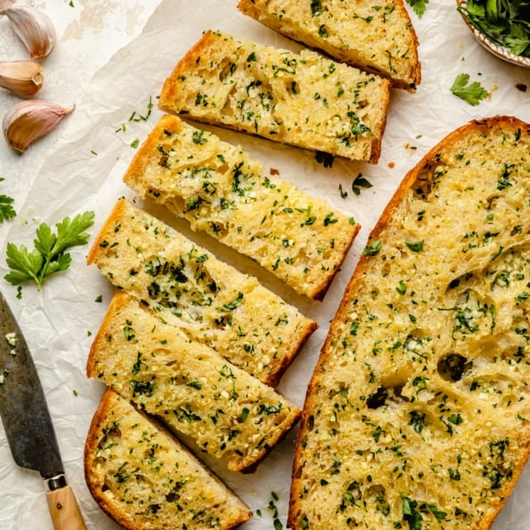

Garlic Bread Recipe

Description
This is the BEST homemade garlic bread you’ll ever make. It has fresh herbs, tons of flavorful roasted garlic, and is perfectly toasted.
This easy garlic bread recipe is delicious served with your fav pasta dishes & comfort foods, and is a guaranteed crowd-pleaser!
Ingredients
- 1 pound Italian loaf or French loaf
- 1/2 cup softened unsalted butter (can also use salted)
- 4 cloves garlic (finely minced)
- 1 tablespoon finely chopped fresh parsley
- 1/8 teaspoon sea salt
Optional:
- 1/4 cup freshly grated parmesan cheese
- OR
- 1/2 cup shredded mozzarella cheese
For garnishing:
Steps
- Preheat oven to 425 degrees F and line a large baking sheet with parchment paper or foil. Slice bread in half lengthwise and place on a large baking sheet, cut sides up.
- In a medium bowl, mix butter, garlic, parsley and salt together until well combined. Spread evenly over bread.
- Bake for 10-15 minutes or until slightly golden brown on the edges. If you want to add cheese, add it the last 2 minutes of baking. If you like a crispier garlic bread, bake for 3-5 minutes more, watching carefully until it is as golden as you like.